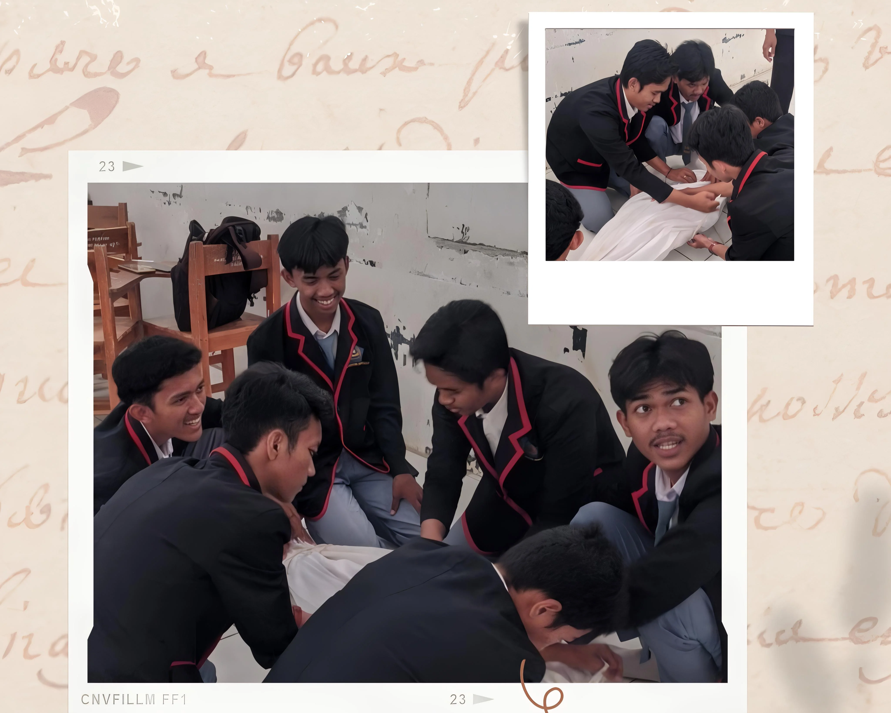
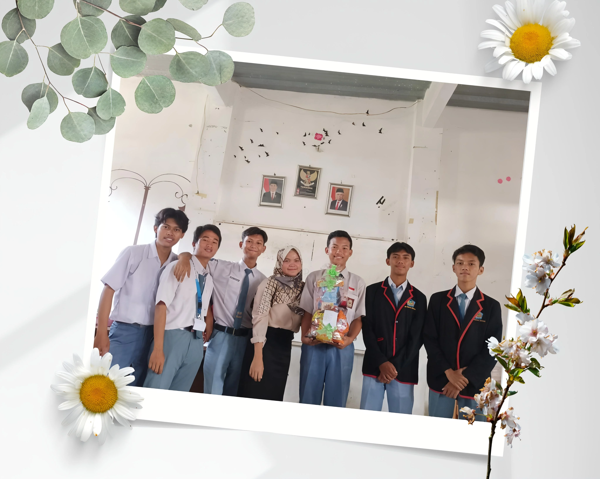
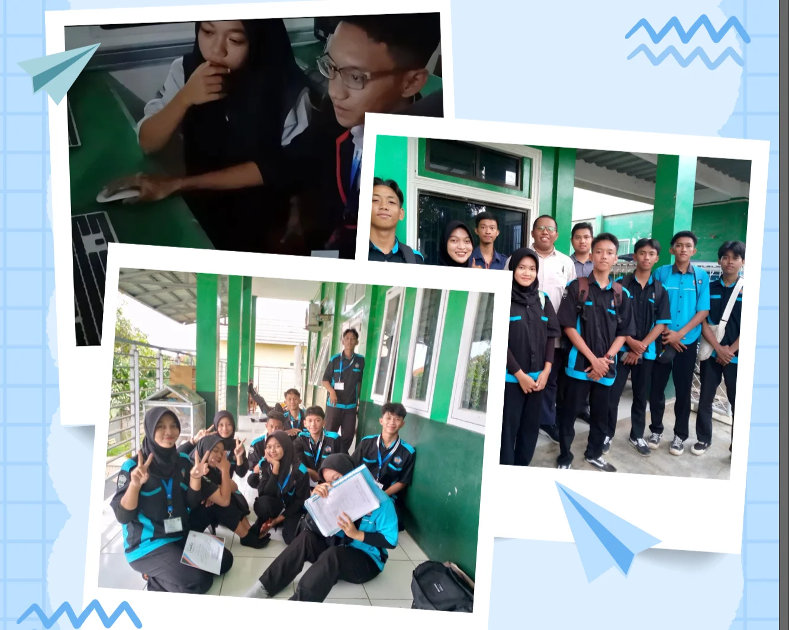
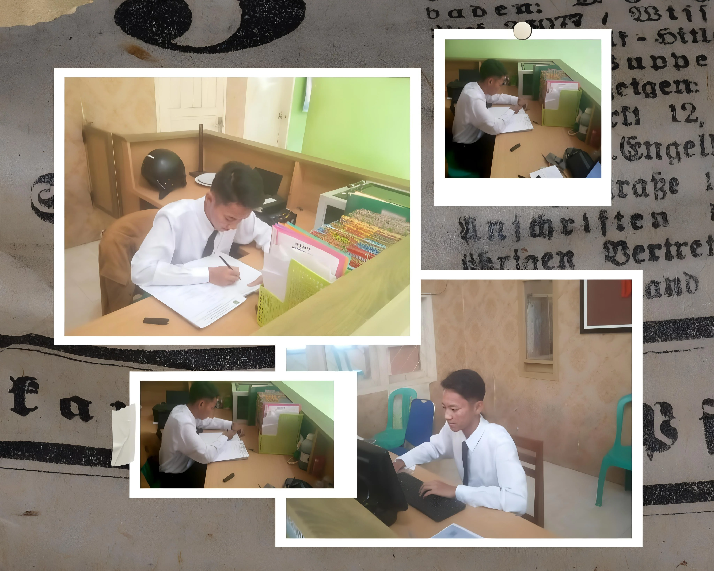

Lulusan SMK Pertiwi Ciasem (2024) jurusan Teknik Komputer dan Jaringan. Memiliki pengalaman Praktik Kerja Lapangan di Kantor Pemerintah Desa Ciasem Tengah dalam bidang administrasi dan pelayanan publik, termasuk pengelolaan dokumen dan pembuatan surat resmi. Dikenal ramah, disiplin, dan bertanggung jawab, serta hobi membaca komik.
Yazid Abdul Kodir
Fresh Graduate | Anggota KPPS Pilkada 2024.
Subang, Jawa Barat, 41256
Tentang Saya
Pengalaman
Praktik Kerja Lapangan. Staf Pelayanan Masyarakat, Kantor Pemerintah Desa Ciasem Tengah
Desember 2022 - Maret 2023
Berkolaborasi dengan perangkat desa untuk meningkatkan efisiensi administrasi, mengelola dan merekap surat serta dokumen resmi, serta memasukkan data DHKP ke dalam Excel dengan akurasi tinggi untuk perhitungan pajak desa.
Praktik Kerja Lapangan. Crew Store, Surya Toserba
November 2022 - Desember 2022
Menjaga penataan produk agar menarik dan memudahkan pelanggan berbelanja, mengelola inventaris dengan metode FIFO untuk memastikan kesegaran barang, serta membantu aktivitas merchandising dan memastikan display produk sesuai standar toko.
Edukasi
SMK Pertiwi Ciasem - Teknik Komputer dan Jaringan
2021 - 2024
Keterampilan
Microsoft Excel: Pengelolaan data, pembuatan tabel, penggunaan rumus dasar (SUM, IF, VLOOKUP).
Microsoft Word: Pembuatan dokumen dan surat menyurat.
Administratif: Pengarsipan dokumen, pengelolaan surat keluar dan masuk, serta penggunaan perangkat kantor.
Adaptabilitas: Mampu beradaptasi cepat dalam lingkungan kerja baru serta bekerja secara efektif baik dalam tim maupun individu.
Lisensi dan Sertifikat
Kompetensi Keahlian Teknik Komputer dan Jaringan
SMK Pertiwi Ciasem - 2024
Praktik Kerja Lapangan
Kantor Pemerintah Desa Ciasem Tengah - 2023

Mempraktikkan proses pengafanan jenazah dengan prosedur yang sesuai.

Merancang dan merangkai parcel kreatif dengan estetika yang menarik dan fungsional.

Menjalani uji kompetensi dalam teknik komputer dan jaringan untuk mengukur keterampilan praktis dan teori.

Melaksanakan tugas administratif dan pelayanan masyarakat di kantor pemerintah desa.